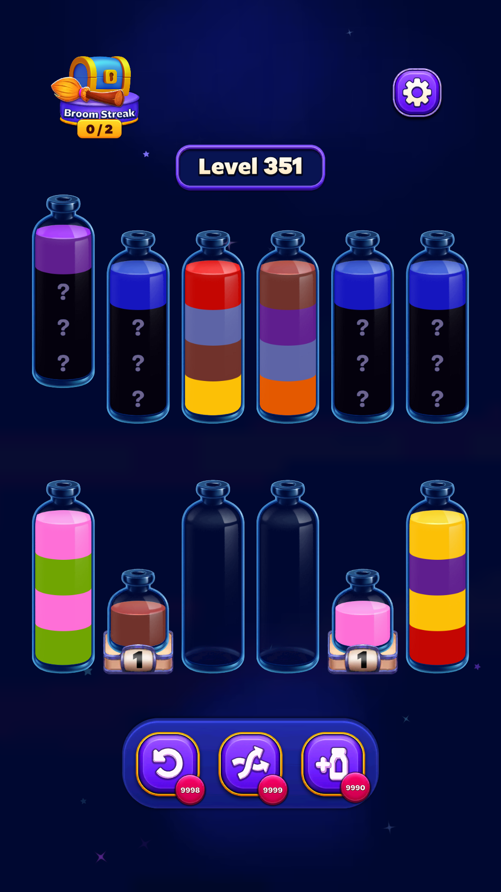
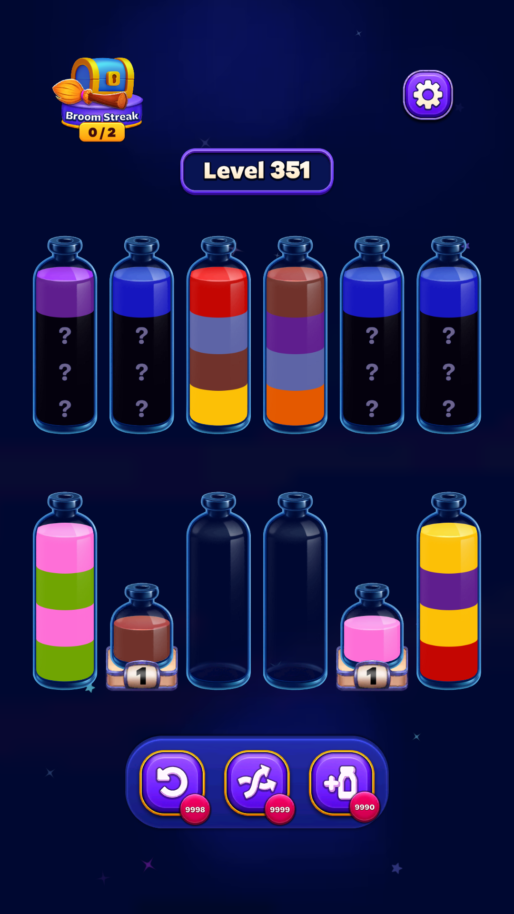
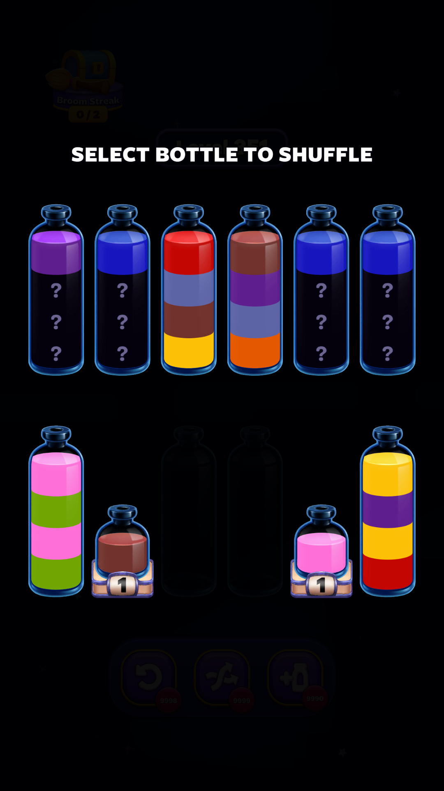
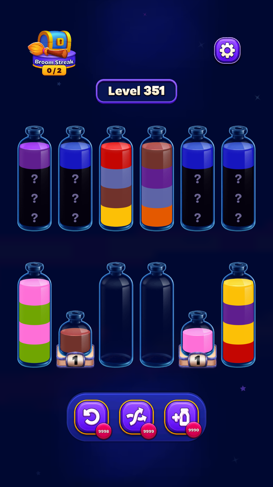
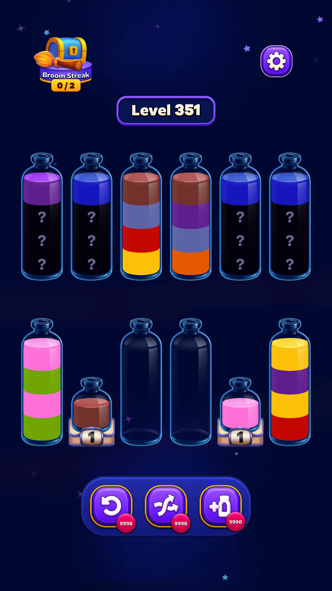
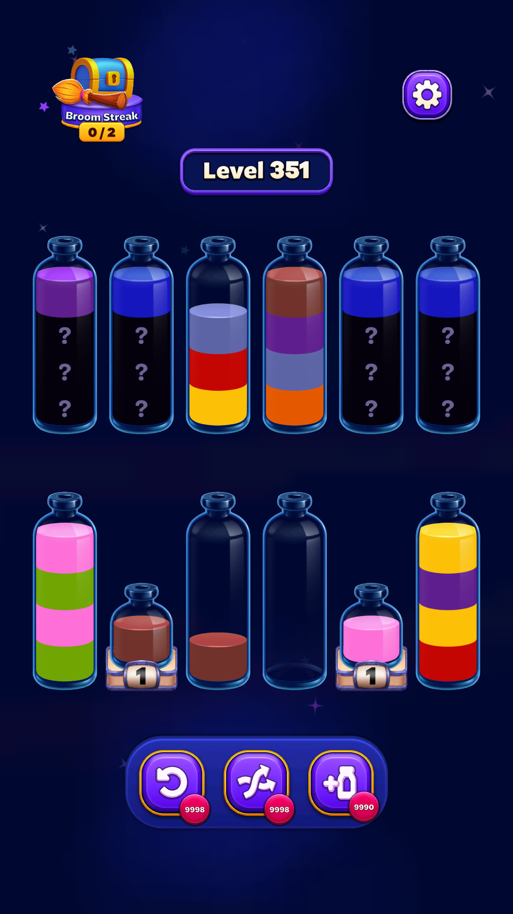
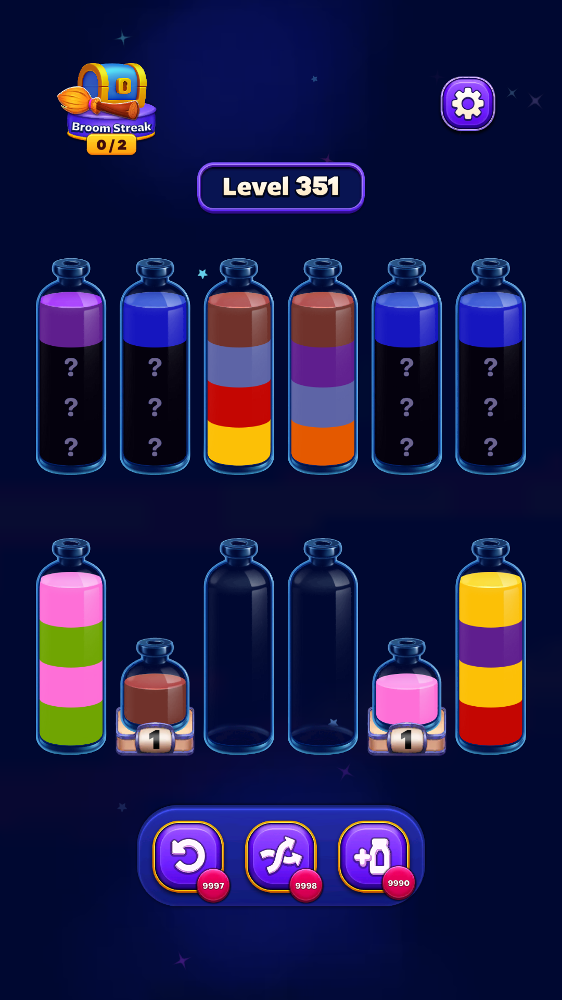
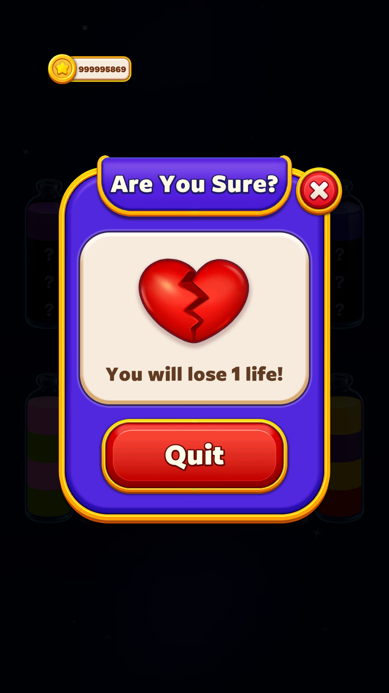
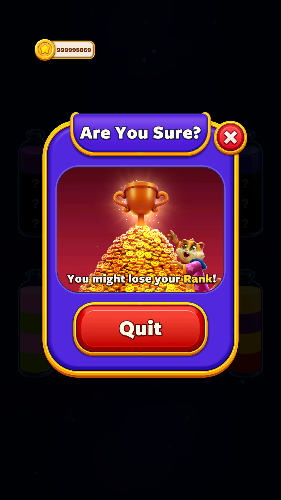
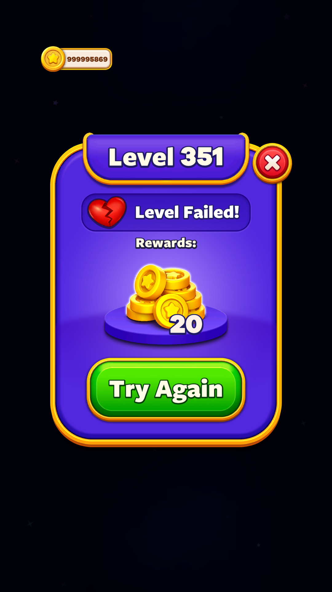

MagicSort — Demo có ảnh: chọn mục tiêu, Shuffle, Undo và thoát màn
Mục lục bài phân tích
Nhận định: Shuffle là một thao tác có hai giai đoạn: người chơi chọn công cụ rồi chọn chai. Trong phiên demo này, mở chế độ chọn hoặc bấm chai rỗng không tiêu vật phẩm; chọn chai có màu mới tiêu một Shuffle. Undo sau đó hoàn tác nước đổ, không đảo lại lần Shuffle. Sự khác biệt này cần được mô tả bằng chuỗi trước/sau, vì một ảnh riêng lẻ không cho thấy lúc nào vật phẩm bị trừ.
Nguồn: thao tác ADB trực tiếp trên LDPlayer ngày 10/10/2026, app 0.0.3129. Không thay save, level, seed hoặc config trong phiên này. Tài nguyên lớn là trạng thái có sẵn từ các phiên thử trước; đây là tài khoản kiểm thử, không đại diện cho kinh tế tài khoản mới. Mọi ảnh dưới đây là cùng một chuỗi mới, thư mục screens/deep_20261010. Nhật ký thao tác và snapshot trước/sau nằm ở facts/runtime/deep_20261010.
Ví dụ xuyên suốt: một người chơi đang ở level 351
Đánh số chai từ trái sang phải: hàng trên 1–6, hàng dưới 7–12. Chai 9 và 10 trống; chai 8 và 11 là chai nhỏ có khóa số 1. Màu trong bảng được viết từ trên xuống dưới, theo bốn lớp nhìn thấy, không phải thứ tự phần tử trong JSON level.
| Bước | Người chơi làm gì | Game phản hồi thật | Số dư / kết quả |
|---|---|---|---|
| 1 | Từ Home vào level 351 | Bàn có chai chứa lớp ẩn và hai chai nhỏ khóa | Coin 999.995.869; Undo 9.998; Shuffle 9.999; Extra Bottle 9.990 |
| 2 | Chạm chai 1 rồi chạm lại | Chọn rồi bỏ chọn; không di chuyển lớp màu | Không tiêu booster |
| 3 | Chạm biểu tượng Shuffle | Nền tối, hiện SELECT BOTTLE TO SHUFFLE; hai chai rỗng tối hơn | Shuffle vẫn 9.999 |
| 4 | Chạm chai rỗng số 9 | Chế độ chọn đóng, bàn trở lại bình thường | Shuffle vẫn 9.999; không có chai nào đổi màu |
| 5 | Mở Shuffle lần nữa, chọn chai 3 | Đảo thứ tự bên trong chai 3 | Đỏ–xanh xám–nâu–vàng → nâu–xanh xám–đỏ–vàng; Shuffle 9.999 → 9.998 |
| 6 | Chạm Undo ngay sau Shuffle | Không đổi bố cục; Undo chưa có nước đổ để hoàn tác trong chuỗi này | Undo vẫn 9.998; Shuffle vẫn 9.998 |
| 7 | Đổ lớp nâu từ chai 3 sang chai trống số 9 | Chai 3 lộ màu xanh xám; chai 9 nhận màu nâu | Chưa tiêu thêm booster |
| 8 | Chạm Undo | Lớp nâu quay lại chai 3; chai 9 rỗng | Undo 9.998 → 9.997; chai 3 vẫn theo thứ tự sau Shuffle |
| 9 | Mở menu rồi chọn Quit | Cảnh báo mất  1 mạng; xác nhận tiếp thì cảnh báo thứ hạng 1 mạng; xác nhận tiếp thì cảnh báo thứ hạng | Chưa phải kết thúc sau cảnh báo đầu |
| 10 | Xác nhận Quit lần hai, đóng Failed | Về Home, vẫn level 351 | Coin giữ 999.995.869; retry đang là 7 (đã tăng trước Quit); không cấp  20 coin đang vẽ trên Failed 20 coin đang vẽ trên Failed |
Luồng: chọn Shuffle → chọn chai có nội dung → đảo màu và tiêu 1 → đổ một nước → Undo nước đổ → xác nhận bỏ màn qua hai cảnh báo → Failed → Home.
Demo 1 — Công cụ đã được chọn nhưng vật phẩm chưa bị tiêu
MS-DEMO-01: chọn và bỏ chọn một chai
Tiền điều kiện: vừa vào màn, chưa đổ nước. Thao tác: chạm chai 1 một lần để nâng lên, chạm lại cùng chai. Kết quả quan sát: chai trở về vị trí, màu và kho booster giữ nguyên. Ý nghĩa thiết kế: lựa chọn chưa phải một nước đi; người chơi có thể đổi ý trước khi chọn đích. Phạm vi xác nhận: thao tác chạm lại đúng chai ở bàn này; chưa khái quát cho mọi trạng thái hoạt ảnh hoặc blocker.




MS-DEMO-02: chọn Shuffle rồi bấm một chai rỗng
Tiền điều kiện: Shuffle 9.999, chai 9 trống. Thao tác: chạm Shuffle, sau đó chạm chai 9. Kết quả quan sát: lớp chọn mục tiêu đóng; số Shuffle vẫn 9.999. Bất biến đã kiểm: không có mục tiêu hợp lệ thì không mất vật phẩm trong thao tác này. Điều cần lưu ý khi viết GDD: không mô tả “bấm nút Shuffle là trừ một lượt”; thời điểm commit nằm sau lựa chọn hợp lệ. Hành vi đóng chế độ khi bấm đích không hợp lệ có thể khiến người chơi phải bật lại công cụ.




Demo 2 — Shuffle đảo nội dung một chai, Undo quay lại một nước đổ
MS-DEMO-03: Shuffle chai 3 có bốn màu
Tiền điều kiện: chai 3 đầy, thứ tự trên xuống đỏ–xanh xám–nâu–vàng. Thao tác: chọn Shuffle rồi chọn chai 3. Kết quả quan sát: thứ tự thành nâu–xanh xám–đỏ–vàng, số lượng Shuffle giảm đúng 1. Màu và số lớp trong chai không mất đi; các chai khác không đổi trong cặp ảnh này. Không suy rộng: một kết quả không cho biết phân phối xác suất, cách chọn hoán vị hoặc liệu mọi lần Shuffle đều bắt buộc đổi màu trên cùng.


MS-DEMO-04: Undo ngay sau Shuffle, khi chưa có nước đổ
Thao tác: chạm Undo sau bước Shuffle. Kết quả quan sát: không phục hồi thứ tự đỏ–xanh xám–nâu–vàng, số Undo vẫn 9.998. Kết luận hẹp: lần Shuffle đầu chuỗi không tạo một nước đổ có thể Undo. Case này không xác nhận điều gì xảy ra với lịch sử đổ cũ nếu người chơi đã đổ nhiều lần trước khi Shuffle; nhánh đó cần phiên riêng.


MS-DEMO-05: đổ sau Shuffle rồi Undo
Tiền điều kiện: chai 3 có màu nâu trên cùng; chai 9 trống. Thao tác: chọn chai 3, chọn chai 9, đợi kết thúc đổ rồi chạm Undo. Kết quả quan sát: nâu đi sang chai 9 rồi quay lại chai 3; Undo giảm 1. Bất biến: trạng thái quay về ngay trước nước đổ, tức vẫn giữ kết quả Shuffle. Ví dụ thiết kế: nếu mục tiêu của người chơi là lấy màu nâu lên trên để mở đường, họ có thể thử một nước đổ và trả lại nước đó; họ không nhận lại Shuffle đã dùng.




Demo 3 — Thoát màn qua hai cảnh báo và kiểm tra tiền thưởng
MS-DEMO-06: cảnh báo khác nhau, hậu quả khác nhau
Thao tác: menu → nút thoát đỏ → Quit ở cảnh báo mạng → Quit ở cảnh báo rank. Kết quả quan sát: cảnh báo đầu nói mất một mạng; cảnh báo thứ hai nói có thể mất hạng. Chúng không đồng nghĩa: một cái là tài nguyên vào màn, một cái là rủi ro tương đối so với người khác. Phiên này không đo được rank thật trước/sau, vì vậy không đánh dấu “đã tụt hạng”.


1 life.



Sổ tài nguyên của cả demo: coin 999.995.869 → 999.995.869 (0); Shuffle 9.999 → 9.998 (−1); Undo 9.998 → 9.997 (−1); Extra Bottle 9.990 → 9.990 (0); level 351 → 351; retry trước toàn phiên 6 → cuối phiên 7; snapshot sau Shuffle đã là 7, nên không quy tăng counter cho Quit. Đây là kiểm tra số dư thực, không quy đổi giá trị tiền mặt cho kho đồ đã chỉnh từ trước.
Các case tiếp theo cần tách riêng
| Case đề xuất — chưa chạy | Cách làm | Câu hỏi cần trả lời | Vì sao đáng kiểm |
|---|---|---|---|
| Có lịch sử đổ rồi mới Shuffle | Đổ A→B; Shuffle C; bấm Undo | Undo cũ bị xóa, bị khóa, hay vẫn dùng được? | Phiên hiện tại bắt đầu bằng Shuffle nên chưa kết luận được lịch sử trước đó |
| Shuffle chai có lớp ẩn | Chọn một chai có dấu hỏi, so trạng thái trước/sau | Shuffle có lộ tất cả lớp hay giữ cờ ẩn? | Giá trị thông tin của booster có thể lớn hơn việc đổi thứ tự |
| Chai chỉ có một màu | Chọn Shuffle trên chai đơn sắc chưa đầy | Chai có được chọn không, có tiêu vật phẩm không? | Tránh tiêu booster cho một thao tác không tạo thay đổi có ích |
| Hết Shuffle | Trên tài khoản kiểm thử khác có số dư 0, mở công cụ | Đi tới mua coin, shop hay quảng cáo? | Không suy nhánh hết kho từ tài khoản có 9.998 lượt |
| Chạm nhanh hai lần vào mục tiêu | Tạo thao tác lặp khi animation đang chạy | Có trừ hai lượt hoặc nhận hai tác động không? | Kiểm tra khóa input và tính nguyên tử, chưa chạy trong phiên này |
Đánh giá để dùng cho GDD
Điểm tốt: có giai đoạn preview công cụ, chỉ trừ khi chọn mục tiêu, trạng thái Undo dễ đối chiếu bằng ảnh trước/sau. Chỗ cần mô tả rõ: thao tác đích không hợp lệ thoát chọn; Shuffle và Undo thuộc hai loại hành động khác nhau; màn Failed vẫn trình bày số thưởng dễ bị đọc nhầm là đã nhận. Nếu xây game tương tự, nên phân biệt nhãn “Thưởng khi thắng” với phần thưởng đã cộng, và cho feedback ngắn khi người chơi chọn một mục tiêu không dùng được.
Đối chiếu RoyalMatch: bài mẫu theo dõi một phiên level 11–12 với ledger coin và ảnh từng bước. Demo này áp dụng cùng cách kể nhưng giữ giới hạn riêng: chỉ một màn, một lần Shuffle và một lần Undo thành công; không gọi sáu case trên là sáu phiên độc lập hoặc là độ phủ toàn game.
Đọc tiếp: Cơ chế và case gameplay, kinh tế và event, phân khúc, kiểm thử đợt đầu.